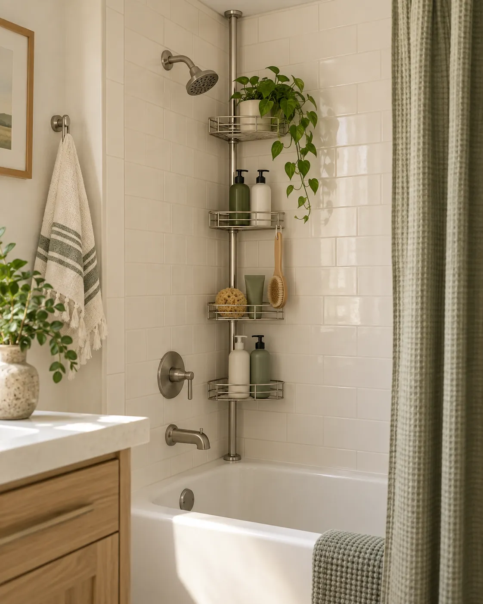

01
MAKE ROOM TO USE IT
Use a tension caddy in the shower
A tension-pole caddy can use a tub or shower corner without drilling into tile. Give each shelf a job and keep heavier bottles low. It works only when the pole can meet a stable ceiling and floor or tub ledge without interfering with the showerhead.
IF YOU NEED TO SHOP
What to check
Measure floor-to-ceiling height, check the contact surfaces, and follow the maker's installation and weight guidance.